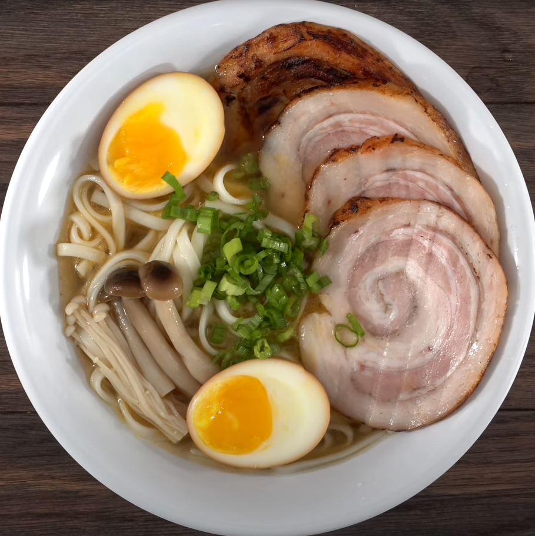

To say me and ramen have history is an understatement, last time I had a noodle brick phase I was suprised to sit down and feel a burning spear clogging my intestines and protruding out my ass and right thru the seat. This is also known as a hemmorhoid.
Don't overdue the brick, kids. Obviously, as a student in the jaws of poverty, I couldn't live wihout ramen for very long. Let's do it right this time around.
The gold standard:
